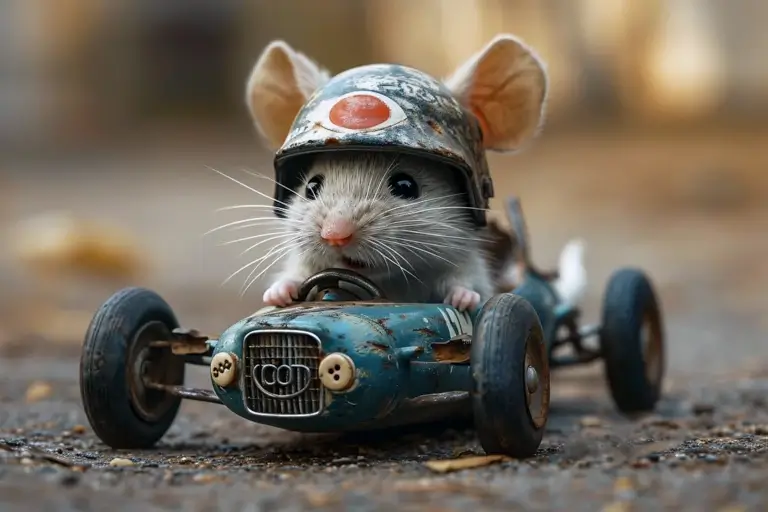
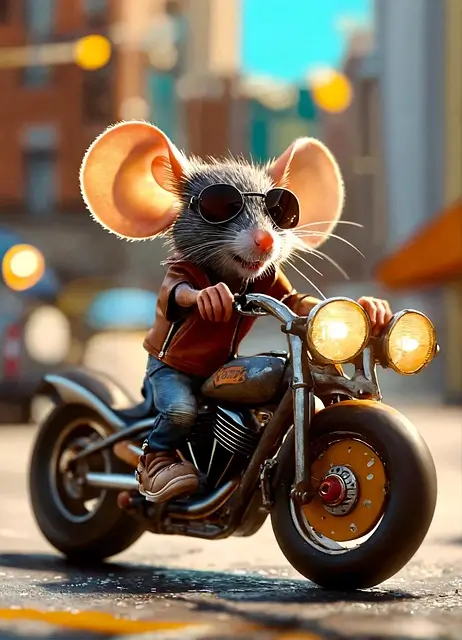
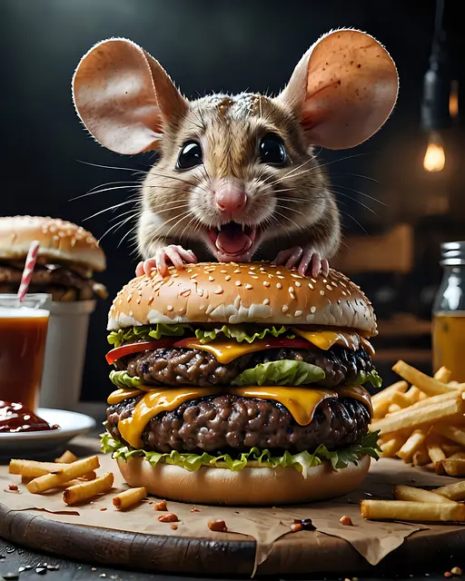
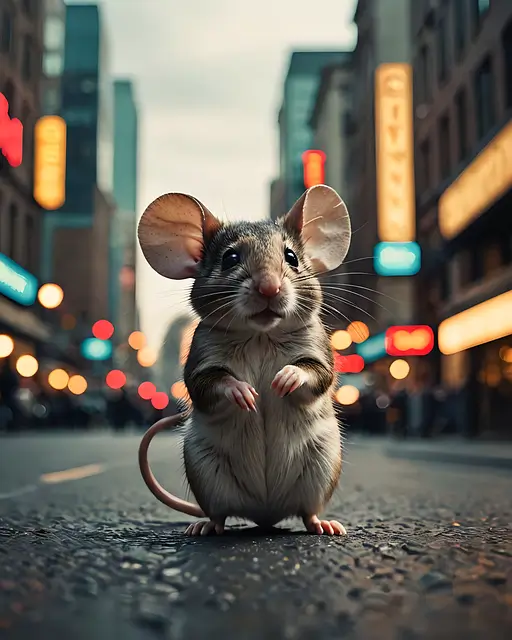
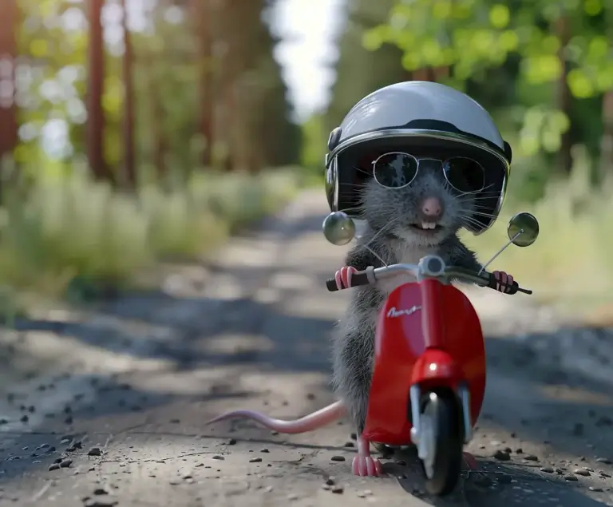

Slider de photos
Super souris collection
Avancer
Clavier
Diaporama
Pagination
Délégation
POO

Exemple de réalisation par AI
Souris à la campagne

Souris en moto

Souris affamée

Souris en ville
Souris en cuisine

Souris en scooter
Souris écossaise
Photo précédente
Photo suivante
Lancer le diaporama